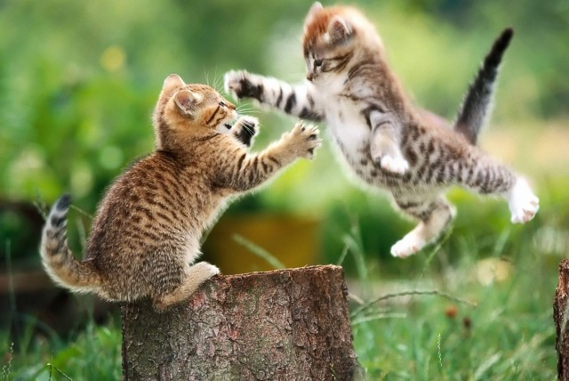
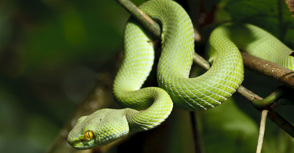

AWESOME FACTS ABOUT ANIMALS
Tigers-Every single tiger in the world has their own distinct pattern of stripes.
Leopords-The leopard is so strong and comfortable in trees that it often hauls its kills into the branches.
Lions-The lion is the second biggest cat in the world.It is also on the endangered list.
Narwals-Their squeals or whistles can make humans deaf.

Elephants-Despite the size of ears the elephant’s hearing is poor.
Penguins-There are 18 species of penguin in the world. While some species are widespread and thriving, 13 of them have declining populations, and five of them are considered endangered and facing possible extinction if strong protection and conservation measures are not taken.
Cats-On average, cats spend 2/3 of every day sleeping. That means a nine-year-old cat has been awake for only three years of its life.
Dogs-Dogs have three eyelids. The third lid, called a nictitating membrane or “haw,” keeps the eye lubricated and protected.
Turtles-Turtles have been on the earth for more than 200 million years.

Sharks-There is evidence to suggest that sharks have been on Earth for more than 420 million years. This means that they are older than dinosaurs!
Panthers-Panther is known as black jaguar in Latin America, as black leopard in Asia and Africa, and as black cougar in North America.
Snakes-A snake can sense animals approaching by detecting vibrations on the ground and in the air.
Anteaters-Anteaters are edentate animals—they have no teeth. But their long tongues are more than sufficient to lap up the 35,000 ants and termites they swallow whole each day.
Dolphins-Oceanic dolphins are also referred to as 'true dolphins' and are the most diverse group of cetaceans.